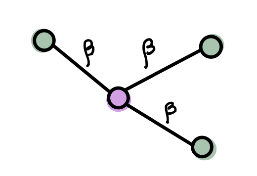
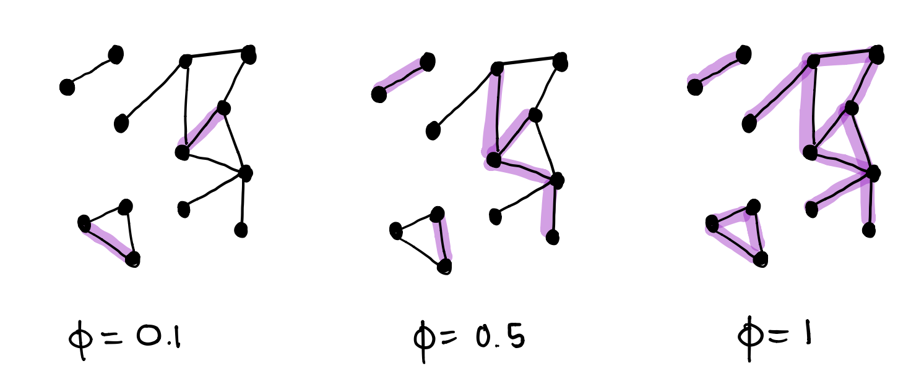
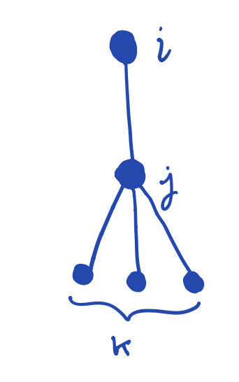
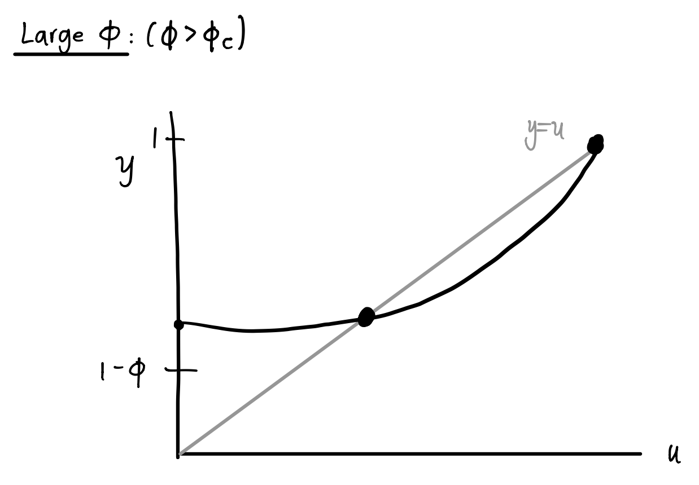
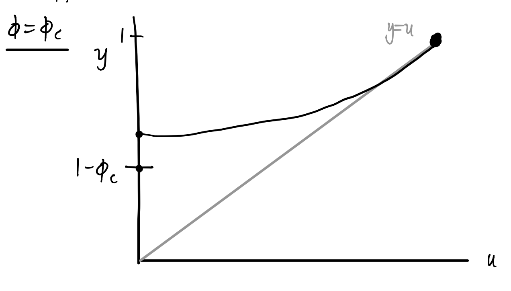
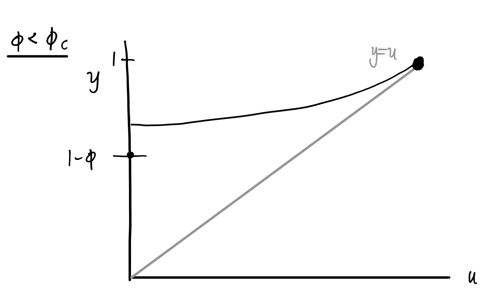

17 Epidemic Models on Networks
Open the live notebook in Google Colab here.
Mathematical models play an important role in understanding the spread of diseases in a population, and are an integral part of informing policies for disease mitigation. The structure of people’s contact networks can have a big effect on the way a disease spreads.
Outbreak sizes
The SI model
First, we’ll model a scenario where individuals can have one of two disease states: susceptible (has not yet contracted the disease) and infectious (is a carrier of the disease). Suppose we have a network with \(N\) agents. We’ll denote the number of susceptible individuals at time \(t\) as \(S(t)\) and the number of infectious agents at time \(t\) as \(I(t)\). We will make several important simplifying assumptions in our model:
- We’ll ignore births or deaths in the population, assuming that these processes happen on slower timescales than the disease spreads.
- Because the total population is conserved, and every agent is in one of the two disease states, we have \(N = S(t) + I(t).\)
- Infections can only be transmitted from an infectious individual to a susceptible individual. The probability per unit time that the infection will be transmitted via an edge connecting one susceptible and one infected individual is \(\beta >0\). We call this quantity the transmission rate or the infection rate.

The model as described above is called an SI model. An important question with any model of disease spread is what happens to the size of the outbreak as \(t \to \infty.\) Let’s explore this question now.
Start with one infectious node \(i\). During a time interval of length \(\Delta t <<1\), the probability of transmitting the disease to a susceptible neighbor (supposing there is one) is \(\beta \Delta t.\) The probability of not transmitting the disease in time interval \(\Delta t\) is \(1-\beta \Delta t.\) Given a total time \(\tau\), we have
\[ \mathbb{P}(\text{disease not transmitted after total time } \tau) = \lim_{\Delta t \to 0} \left(1 -\beta \Delta t\right)^{\tau/\Delta t} = e^{-\beta \tau} \,. \]
That is, as \(\tau \to \infty\), the probability of the susceptible node remaining uninfected approaches 0. We expect that a susceptible node with an infected neighbor will eventually become infected. Continuing this argument, any node that is path-connected to an infected node will eventually become infected. From this we can conclude that the size of the outbreak will be the size of the component that contains the initially infected node.
Fortunately, we have already studied the calculation of component sizes (see Section 8.4.3.1). Consider a network where the fraction of nodes in the giant component is \(S\). Then, with probability \(S\), the expected size of the outbreak will be \(NS.\) With probability \(1-S\), the number of infectious individuals will remain small, with the size of the outbreak determined by the size of the connected component containing the initially infectious node.
Through this quick analysis, we see that even in the simplest epidemic model, network structure introduces stochasticity into the dynamics.
The SIR model
To make the model slightly more realistic, we could assume that agents could eventually recover from the disease, while keeping the other parameters and assumptions as above. We will assume that recovered individuals are no longer infectious (they cannot spread the disease to other agents) and they are also no longer susceptible (they have developed immunity to future infections). Let \(R(t)\) denote the class of recovered individuals at time \(t\). Now, \(N = S(t) + I(t) + R(t).\) This model is called an SIR model.
As in the SI model, the transmission probability between an infectious nodes \(i\) and susceptible node \(j\) is \[ \phi_{ij} = 1 - e^{-\beta \tau_i} \, \]
where \(\tau_i\) is the amount of time that an individual \(i\) is infectious. In this case, \(\tau_i\) is a disease-dependent parameter that can be interpreted as a recovery rate. While this value is often chosen to be a fixed constant, we could also draw \(\tau_i\) from a distribution or allow it to depend on other node properties.
Notice that we have a key difference in our dynamics due to the introduction of the recovered class. Unlike in the SI model, it is possible for an infectious node to recover before it infects its susceptible neighbors, thus limiting the spread of disease.
Intuitively we can see the qualitative effects of our parameters \(\beta\) and \(\tau\). If either (or both) of these parameters are small, then the transmission probability \(\phi\) will also be small. In this regime, we expect the outbreak to reach a limited number of agents and exist only in isolated clusters.

As \(\phi\) increases, we will eventually reach a percolation transition where a large “cluster” forms, and thus an epidemic (i.e., a large outbreak) is possible. Again, if \(S\) is the fraction of nodes in the cluster, the size of the outbreak will be \(NS\) will probability \(S\). Note that a large value of \(\phi\) doesn’t guarantee an epidemic — this is a stochastic process and it is possible for the disease to die out by chance.
SIR on configuration model networks
Now that we have some intuition behind the effect of parameters in the SIR model, let’s calculate the size distribution of the epidemic as well as the epidemic threshold. The mathematical ideas we use in this section come from the study of bond percolation (see Sahimi (2023)).
Suppose we have a configuration model with degree distribution \(p_k\). We will initially choose one node uniformly at random to be infectious. The transmission probability (as derived in the previous section) will be denoted \(\phi\); we can also think of this as an edge “occupation” probability. We will assume that transmission along each edge is independent.
What is the probability that a node \(i\) is connected to a giant percolation cluster (that is, in an epidemic)? It’s easier to calculate the expected probability \(u\) that a node is {} connected to the giant percolation cluster via one of its edges, say \((i,j)\). This can happen one of two ways:
The edge \((i,j)\) is unoccupied (no transmission of infection between \(i\) and \(j\)): \[ \mathbb{P}(\text{edge unoccupied}) = 1 - \phi,. \]
The edge is occupied (infection has been transmitted between \(i\) and \(j\)), but \(j\) is not connected to the giant cluster (no transmission between node \(j\) and any of its \(k\) neighbors): \[ \mathbb{P}(j \text{ not connected to giant cluster by any of } k \text{ edges}) = u^k \,, \] and so \[ \mathbb{P}((i,j) \text{ occupied and } j \text{ not connected by any of } k \text{ edges}) = \phi u^k \,, \]

Combining (1) and (2) gives our desired quantity: \[ \mathbb{P}(i \text{ not connected to giant cluster via degree} (k+1) \text{ neighbor}) = 1 - \phi + \phi u^k \,. \]
We know that, for a configuration model with degree distribution given by \(p_k\), the value of \(k\) is distributed according to the excess degree distribution \[ q_k = \frac{(k+1)p_{k+1}}{\langle k \rangle} \,, \] where \(\langle k \rangle\) is the mean degree.
Summing over all possible values of \(k\) gives \[ \begin{aligned} u &= \sum_{k=0}^\infty q_k \left(1-\phi+\phi u^k\right) \nonumber \\ &= \sum_{k=0}^\infty q_k - \phi \sum_{k=0}^\infty q_k + \phi \sum_{k=0}^\infty q_k u^k \nonumber \\ &= 1 - \phi + \phi g_1(u) \,, \end{aligned} \tag{17.1}\]
where \(g_1(u)\) is the generating function associated with the excess degree distribution for our network. In general, Equation 17.1 may be difficult to solve, or may not have a closed form solution. However, we can use a graphical method to get insight into the epidemic threshold.
We know that \(g_1(u)\) is a polynomial with nonnegative coefficients because it is a probability generating function. Therefore, for \(u \in [0,1]\), we know
- \(g_1(u) \geq 0\),
- all derivatives of \(g_1\) with respect to \(u\) are nonnegative, and
- \(g_1(1) = 1\).
We look for intersections of \(u\) and \(1- \phi + \phi g_1(u) = y\). To calculate \(y\), we take \(g_1(u)\) and shift up by \(1- \phi\) and multiply by \(\phi\).
If \(\phi\) is sufficiently large, we will see the following qualitative behavior: 
As \(\phi\) decreases, then eventually at \(\phi = \phi_c\) the second intersection disappears:  
Inspired by our sketches, we can calculate the value of \(\phi_c\) by noticing this transition occurs when the curve is tangent to the identity line at \(u=1\), that is,
\[ \begin{aligned} \frac{d}{du} \left[ 1 - \phi_c + \phi_c g_1(u)\right] \bigg \vert_{u=1} = 1 \,, \\ \rightarrow \phi_c g_1'(1) = 1 \,, \\ \rightarrow \phi_c = \frac{1}{g_1'(1)} \,. \end{aligned} \]
We have previously calculated the quantity \(g_1'(1)\) in terms of the degree distribution in Section 10.4.2: this is the expected excess degree, which is given by \(\frac{\langle k^2\rangle - \langle k \rangle}{\langle k \rangle}\). Thus, \[ \phi_c = \frac{\langle k \rangle}{\langle k^2\rangle - \langle k \rangle} \,. \]
We can even write this in terms of model parameters \(\beta\) and \(\tau\). Since \(\phi_c = 1-e^{-\beta \tau}\), we have \[ \begin{aligned} \beta \tau &= -\ln \left(1-\phi_c \right) \\ & = -\ln \left[ \frac{\langle k^2 \rangle- \langle k \rangle - \langle k \rangle}{\langle k^2 \rangle- \langle k \rangle} \right] \\ &= \ln \left[ \frac{\langle k^2 \rangle- \langle k \rangle}{\langle k^2 \rangle- 2\langle k \rangle} \right] \,. \end{aligned} \]
If the product \(\beta \tau\) is less than this value, we do not expect an epidemic. However, if \(\beta \tau\) is larger than this value, then an epidemic is possible! This helps us link disease model parameters to network structure.
The argument to approximate the size of the outbreak is similar to what we have done previously. Let \(S\) be the fraction of nodes in the giant percolation cluster. Since \(u\) is the probability that a node is not connected to a giant cluster via a particular edge, a node with \(k\) edges is not connected to the giant cluster with probability \(u^k\).
For the network, we expect that \[ \mathbb{P}(\text{not in cluster}) = \sum_{k=0}^\infty p_k u^k = g_0(u)\,, \] and so \[ \mathbb{P}(\text{in cluster}) = S = 1-g_0(u)\,. \]
As before, the expected size of the outbreak is \(NS\), which occurs with probability \(S\). Note that, unlike in the SI model, \(S\) depends on \(\beta\) and \(\tau\). If these values exceed the threshold, then an epidemic is possible, if the infection is introduced in the giant cluster.
Time-dependent properties of epidemics on networks
If we want to understand the dynamic evolution and understand the progression of the disease spread in time (not just the limiting behavior) in an analytic way, we need to develope additional techniques. One strategy is to leverage tools from differential equations to study the evolution of the probabilities of a particular node have a particular state at time \(t\). We’ll give a taste of the methods here for the SI model. Porter and Gleeson (2016) provide a resource for further techniques for dynamical systems on networks.
SI model
Imagine running many simulations of an SI model with the same parameters on the same network with the same initial conditions.
For node \(i\), define \(S_i(t) =\) expected probability that node \(i\) is susceptible at time \(t\), and $X_i(t) = $ expected probability that node \(i\) is infected at time \(t\). As before, we’ll assume infections occur with probability \(\beta dt\) if node \(i\) is susceptible and connected to an infectious node \(j\).
Then, we can write equations to describe how these quantities evolve in time. \[ \begin{aligned} \frac{dS_i(t)}{dt} &= -\beta S_i \sum_{j=1}^n A_{ij}X_j \\ \frac{dX_i(t)}{dt} &= \beta S_i \sum_{j=1}^n A_{ij}X_j \end{aligned} \]
Note that, because we have a conserved quantity \(X_i(t) + S_i(t) = 1\), these two equations are redundant. The system can be reduced to an equation describing the evolution of the probability that node \(i\) is infected: \[ \frac{dX_i(t)}{dt} = \beta (1-X_i)\sum_{j=1}^n A_{ij}X_j = \beta \sum_{j=1}^n A_{ij}X_j - \beta X_i \sum_{j=1}^n A_{ij}X_j \,. \]
Now, we have a system of \(n\) ordinary differential equations for infection probabilities, which are coupled through the network structure. For an arbitrary adjacency matrix \(A\) this system does not have a closed-form solution. However, we can learn something about the behavior for small \(t\) (the beginning of an outbreak) by considering suitable limits.
Assume we use an initial condition where we infect only a single node selected uniformly at random. In this case, \(X_i(0) = \frac{1}{n}\) and \(S_i(0) = 1-\frac{1}{n}\). Consider the large-\(n\) limit (\(n \to \infty\)). In other words, when \(n\) is large, \(S_i(0) \approx 1\) and \(X_i(0)\) is extremely small for all \(i\). Thus, for sufficiently small \(t\), the quadratic term \(X_iX_j\) is much smaller than the linear term. This observation allows us to write an approximate linear system \[ \frac{dX_i}{dt} \approx \beta \sum_{j=1}^n A_{ij}X_j. \]
Writing \({\bf x}(t)\) as the vector \((X_1(t), X_2(t), \dots X_n(t))^T\) containing the probabilities for each node, we can write our system in matrix form \[ \frac{d}{dt}{\bf x} \approx \beta A {\bf x}\,. \tag{17.2}\]
We can study the solutions of the linearized system by studying the eigenvalues and eigenvectors of \(A\). Let \({\bf v}_r\) be the eigenvector with associated eigenvalue \(\lambda_r\), so that \(A{\bf v}_r = \lambda_r {\bf v}_r\). If we write \({\bf x}\) as a linear combination of the eigenvectors of \(A\), we have
\[ {\bf x} = \sum_{r=1}^n c_r(t) {\bf v}_r \,, \tag{17.3}\]
where \(c_r(t)\) are the time-dependent coefficients of this linear combination. Substituting Equation 17.3 into Equation 17.2 gives \[ \frac{d}{dt} {\bf x} = \sum_{r=1}^n \frac{dc_r}{dt} {\bf v}_r = \beta \sum_{r=1}^n c_r(t) \lambda_r {\bf v}_r \,. \]
Therefore, for each term, we have a first-order linear differential equation describing the coefficients \[ \frac{dc_r}{dt} = \beta \lambda_r c_r \ \Rightarrow \ c_r(t) = c_r(0)e^{\beta \lambda_r t} \,. \]
Finally, substitute this expression for the time-dependent coefficients into Equation 17.3 to get the solution for \({\bf x}\): \[ {\bf x} = \sum_{r=1}^n c_r(0)e^{\beta \lambda_r t}{\bf v}_r\,. \]
Our solution will be dominated by the fasted growing term (i.e., the largest magnitude eigenvalue, which we will call \(\lambda_1\)). \[ {\bf x}(t) \sim e^{\beta \lambda_1 t} {\bf v}_1 \,. \]
This means that in the early stages of the disease spread, we expect the number of infectious individuals to grow exponentially. The growth rate is determined by the largest magnitude eigenvalue \(\lambda_1\) of the adjacency matrix, and the probability varies for different nodes. These probabilities correspond to different components of \({\bf v}_1\).
In fact, we have met such a vector before. The components of the leading eigenvector are what we previously defined as eigenvector centralities — so this centrality measure gives an approximation to early infection time probability in an SI model!
We have made several approximations in this analysis. In particular, in order to study the linearized problem, we have neglected correlations between neighbors. However, \(S_i\) and \(X_j\) are not necessarily independent! This can be accounted for using pair approximation (or moment closure) methods; see Porter and Gleeson (2016).
References
© Heather Zinn Brooks and Phil Chodrow, 2025